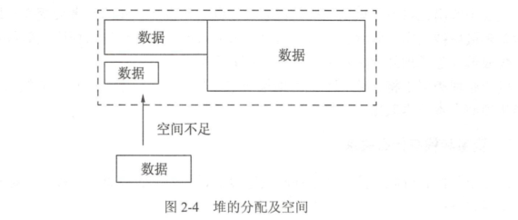

Contents
1.4. 变量声明周期 - 变量能够使用的代码范围¶

1.4.2. 变量和栈有什么关系¶
栈可以用于内存分配，栈的分配和回收速度非常快。
package main
import "fmt"
func calc(a, b int) int {
var c int // 声明c整型变量，运行时，给c分配一段内存存储c的数值
c = a * b
var x int // 声明x整型变量，运行时，给x分配一段内存存储x的数值
x = c * 10
return x // 返回x的值
}
func main() {
result := calc(6, 7)
fmt.Println(result) //420
}
上面的代码在没有任何优化的情况下，会进行c和x变量的分配过程，Go语言默认情况下， 会将c和x分配在栈上，这两个变量在calc()函数退出时就不再使用，函数结束时，保存c和x的栈内存将被释放。 整个分配内存的过程通过栈的分配和回收都非常迅速。
1.4.3. 声明是堆¶
堆在内存分配中类似于往一个房间里摆放各种家具,家具的尺寸有大有小。 分配内存时，需要找一块足够装下家具的空间再摆放家具。经过反复摆放和腾空家具后,房间里的空间会变得乱七八糟, 此时再往空间里摆放家具会存在虽然有足够的空间,但各空间分布在不同的区域,无法有一段连续的空间来摆放家具的问题。 此时,内存分配器就需要对这些空间进行调整优化， 如图

堆分配内存和栈分配内存相比，堆适合不可预知大小的内存分配，但是为此付出的代价是分配速度较慢，而且会形成内存碎片。
1.4.4. 变量逃逸（Escape Analysis） - 自动决定变量分配方式，提高运行效率¶
堆和栈各有优缺点， 该怎么在编程中处理这个问题呢？ 在C++语言中， 需要开发者自己学习如何进行内存分配， 选用怎样的内存分配方式来适应不同的算法需求。比如， 函
数局部变量尽量使用栈；
全局变量、结构体成员使用堆分配等。
程序员不得不花费很多年的时间在不同的项目中学习、记忆这些概念并加以实践和使用。
Go 语言将这个过程整合到编译器中， 命名为“ 变量逃逸分析” 。这个技术由编译器分析代码的特征和代码生命期， 决定应该如何堆还是栈进行内存分配， 即使程序员使用Go语言完成了整个工程后也不会感受到这个过程。
1.逃逸分析¶
package main
import "fmt"
func dummy(b int) int {
// 声明一个c赋值进入参数并返回
var c int
c = b
return c
}
//空函数，什么也不做
func void() {
}
func main() {
// 声明a变量并打印
var a int
void() // 调用void()函数
fmt.Println(a, dummy(0))
}
2.取地址发生逃逸¶
package main
import "fmt"
// 声明结构体逃逸情况
type Data struct {
}
func dummy() *Data {
// 实例化c为Data类型
var c Data
// 返回函数局部变量地址
return &c
}
func main() {
fmt.Println(dummy())
}
原则：
使用Go语言进行编译时，Go语言的设计者不希望开发者将精力放在内存应该分配在栈还是堆上的问题，编译器会自动帮助开发者
完成这个纠结的选择，但变量逃逸分析也是需要了解的一个编译器技术，这个技术不仅用于GO，在Java等语言的编译器优化上也使用了类似的技术